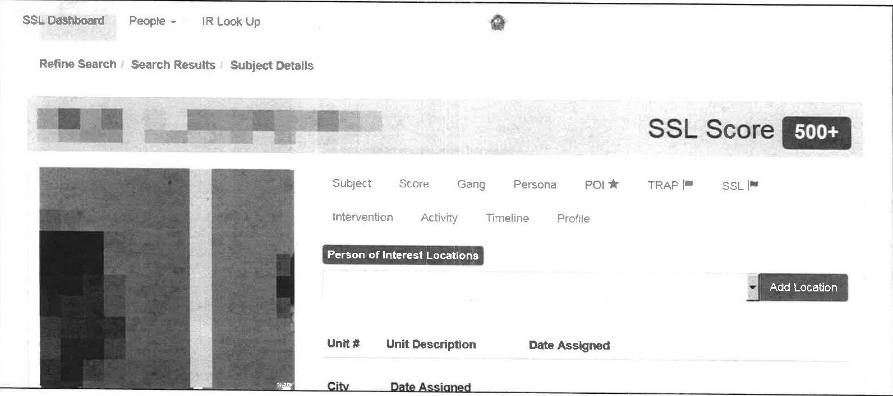

License Plate Readers
Predictive Policing
Since 2012, the CPD has used a statistical model to predict the likelihood of someone becoming a “Party to Violence” (PTV), or be involved as either a victim or offender of a violent crime. The model, developed in collaboration with the Illinois Institute of Technology, was initially called the Strategic Subject List (SSL) and was later revised and renamed the Crime and Victimization Risk Model (CVRM). This model was quietly decommissioned by the CPD in 2019.
Where
The CVRM was meant to play a key role in CPD’s new Strategic Decision and Support Centers (SDSCs,) "real time crime centers" which are now located in all but two of Chicago’s 22 districts. Officers could also view at risk individuals identified by the CVRM on a phone app.
Costs
CPD received $3.8 million in federal grants to develop the SSL and CVRM. CPD also paid close to $1.2 million to a team led by University of Chicago’s Crime Lab for technical assistance in crime reduction initiatives, including a “Total overhaul of mission assignments to use predictive analytics and SSL on offenders.” Of this sum, $200,000 was alloted to Sean Malinowski, a former LAPD chief of staff who marshalled LAPD’s use of controversial predictive policing software, which it recently ended.
Capabilities
CPD’s PTV model outputs a risk classification for anyone arrested in Chicago over the past four years (over 300,000 people.) The model’s output is based on risk factors such as a subject’s age and involvement in various types of crimes, with more recent incidents being given a higher weight than older ones. Individuals’ scores are also influenced by the scores of co-arestees. IIT provided a fact sheet which describes the model in greater detail. Note, however, that the model and its inputs and outputs have changed over time. Previously, the model took into account gang affiliation based on the now defunct (although soon to be revamped) gang database.
CVRM contributed to the Custom Notification Program, which is supposed to work with at risk individuals and families by contacting and visiting them, reminding them of the risks of being involved in violent crime, and connecting them with social services. In reality, however, an individual who has received a custom notification and is arrested is liable to receive the "highest possible charges," even though these notifications may be based off of an algorithm.
SSL and CVRM scores were also being used to assist in investigations and mission related activity, although it is unclear to what extent.
Efficacy
IIT claims that among the individuals with the highest CVRM risk scores, about one in three will be involved in a shooting incident within 18 months of the classification.
In a review of SDSCs and the CVRM, the Rand Corporation found the CVRM to be ”operationally unsuitable” as the model takes many months to run, and it must be run at IIT, which stopped working on the CVRM because of the expiration of grants for the project.
In addition, the report notes that the model doesn’t take into account factors that would be necessary to identify appropriate interventions for those at risk, such as educational, medical, and social factors, which would fall outside of police records and which would be difficult to quantify.
An earlier RAND study from 2016 found that the first version of the SSL was essentially ineffective in predicting homicide victims. CPD disputes this study, claiming that the model has changed since then. However, due to the lack of transparency surrounding these models and CPD’s reluctance to evaluate them, it is impossible for the public to understand whether or not these models are effective.
Legal and Privacy Concerns
Although the PTV model’s developers claim that it does not take race and other social factors into account, 56% of all Black males between 20 and 29 had an SSL score. The model is trained on historical arrest data which is skewed due to biased policing practices. An investigative report by ProPublica from 2016 revealed how predictive policing algorithms tend to disproportionately target people of color.
In addition, there are concerns that the CVRM unfairly targets subjects who are involved in petty crimes by weighting connections with co-arrestees
A major concern around CPD’s use of PTV modelling, as with most of the department’s uses of technology, is its secrecy. An anonymized version of the SSL was released in 2017, five years after its initial development, after a legal battle with the Chicago Sun-Times. A spokesperson for the CPD claimed that PTV scores were not being used for law enforcement purposes, yet this turned out to be false. The CPD also told the Office of the Inspector General (OIG) that data from PTV models was not being shared, yet OIG found that CPD was in fact sharing this data with multiple public agencies, including the State Attorney’s Office, which may have used SSL scores to aid in prosecutions. This last point is particularly worrying, since individuals are given an SSL score if they are arrested and not necessarily charged or found guilty of any crime.
